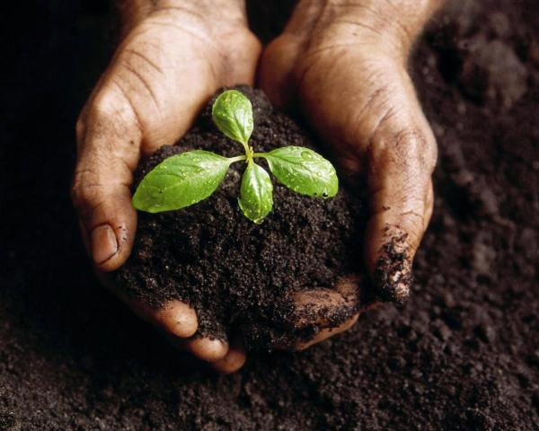

Bem-vindo ao Projeto Sementes em Movimento
Este é um projeto inovador que busca enfrentar os desafios da urbanização promovendo práticas sustentáveis como transporte ecológico e a disseminação de plantas nativas. Navegue pelo site para entender como você pode participar e fazer a diferença!
Destaques
- 🌳 Promova a arborização e restaure a biodiversidade urbana.
- 🚴 Incentive o uso de meios de transporte ecológicos.
- 🤝 Participe de campanhas comunitárias e eventos de plantio.
